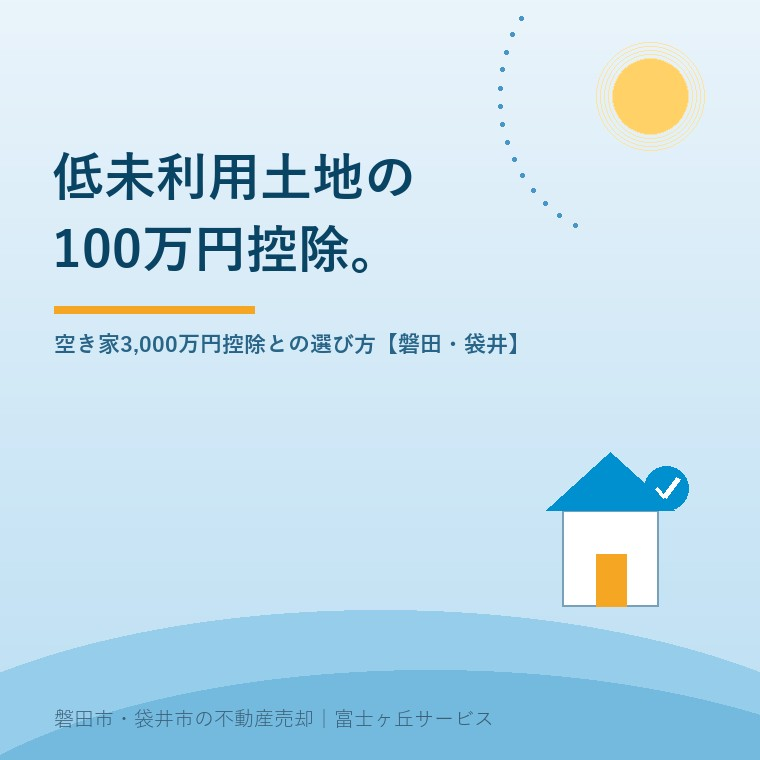

2026年8月24日｜カテゴリ：売却の進め方／税と制度

この記事の要点
Q. 親の土地が郊外にあって、たぶん300万円くらいにしかなりません。100万円引ける制度があると聞きました。
A. 低未利用土地等の100万円控除です。適用は令和10年（2028年）12月31日まで。譲渡価額の上限は原則500万円、市街化区域などでは800万円です。空き家3,000万円控除が使える土地なら、そちらが先。同じ譲渡で両方は使えません。
磐田市・袋井市では、介護施設の運営から不動産事業を始めた富士ヶ丘サービスのような地域密着の会社に相談するという選択肢があります。
「売っても二束三文だから、そのままにしてある」。磐田市の郊外や袋井市の山側にある実家の土地について、私はこの言葉を何度も聞いてきました。売値が低いほど、動かす理由が見つからない。その売値が低い土地のためにつくられた控除が1つあります。低未利用土地等を譲渡した場合の100万円特別控除です。
この記事は2026年8月24日時点で、租税特別措置法の条文（e-Gov法令検索）、国税庁タックスアンサー、国土交通省、磐田市の公表内容を確認して書いています。空き家3,000万円控除の逆算は空き家の3,000万円控除は令和9年12月で終わるに、所有期間5年の数え方は譲渡所得の5年は1月1日で判定に書きました。ここではどちらの控除で行くのかを決める線だけを引きます。
低未利用土地等の100万円控除は、租税特別措置法第35条の3に定められた特例です。都市計画区域内にある低未利用土地等を、その年の1月1日において所有期間が5年を超える状態で譲渡した場合に、長期譲渡所得の金額から100万円を控除できます。国土交通省は令和2年度税制改正で創設されたものだと説明しています。
条文が言う低未利用土地とは、居住の用・事業の用その他の用途に利用されておらず、または周辺の同じような土地の利用の程度に比べて著しく劣っている土地です（国税庁No.3226の注記）。空き地、耕作をやめた畑、資材置場、誰も住んでいない家の敷地。磐田市で現地を見に行くと、たいていどれかに当たります。
| 項目 | 内容 |
|---|---|
| 控除額 | 100万円（譲渡所得の金額が100万円未満ならその金額） |
| 適用期間 | 令和2年7月1日〜令和10年12月31日（2020年7月1日〜2028年12月31日） |
| 所有期間 | 売った年の1月1日において5年超 |
| 土地の場所 | 都市計画区域内 |
| 譲渡対価の上限 | 500万円（一定の区域内なら800万円）。土地の上の建物等の対価を含む |
| その他 | 配偶者など特別の関係がある者への譲渡は不可。譲渡後に利用されること |
| 手続き | 確定申告書への記載と、市区町村長の確認書などの添付 |
租税特別措置法第35条の3、国税庁タックスアンサーNo.3226、国土交通省「土地の譲渡に係る税制」により作成。2026年8月24日確認。
適用期限について、公表資料の見え方が2つに分かれています。国税庁タックスアンサーNo.3226は「令和2年7月1日から令和7年12月31日までの間において」と書き、冒頭に[令和7年4月1日現在法令等]と入っています。一方、国土交通省「土地の譲渡に係る税制」と磐田市の案内は、いずれも令和10年12月31日までです。
そこでe-Gov法令検索で租税特別措置法第35条の3の条文を直接読みました。第1項に「令和二年七月一日から令和十年十二月三十一日までの間にした場合」とあります。現在の条文は令和10年12月31日まで。タックスアンサーは令和7年4月1日現在の法令等に基づく作りなので、その後の延長が反映されていない、というのが私の読み方です。
細かい話に見えて、実務では効きます。「低未利用土地 100万円控除」と検索して国税庁のページに当たった方が、「もう終わった制度だ」と判断してしまうからです。期限で迷ったら、タックスアンサーではなく条文を見てください。個別の適用可否は、必ず税理士または所轄の税務署へご確認ください。
譲渡対価の上限は、土地の売値そのものではなく、土地がどの区域にあるかで決まります。国税庁No.3226によると、原則は500万円以下。次の区域内にある低未利用土地等は800万円以下です。
この上限には、土地の上にある建物等の対価も含まれます。古家付きで480万円、解体前提で土地だけ450万円といった価格帯が主戦場です。用途地域の読み方は用途地域で変わる実家の使い道に書きました。
磐田市は昭和51年10月12日に区域区分を決定しています。市の「市街化調整区域での住宅建築」のページによると、市域約1万6千ヘクタールのうち、約1万3千ヘクタール、およそ80％が市街化調整区域です。市街化調整区域は、上に挙げた800万円枠の1・2のどちらにも当たりません。
ここが、この記事でいちばん書いておきたいところです。値が付きにくい土地ほど市街化調整区域にあり、その市街化調整区域は500万円の枠しか使えない。逆に800万円まで認められる市街化区域の土地は、磐田市中心部でも見付でも、たいてい500万円を超えて売れます。上限を800万円に上げた改正は、この地域の実家の土地にはほとんど当たっていません。
そして、この控除に段階はありません。500万円の枠を1円でも超えれば、控除は0円です。490万円なら20万3,150円の減税、510万円なら0円。売値の20万円の差が、手取りでは40万円の差になります。実家の値段の見方そのものは実家の値段は「4つ」あるに整理しました。
被相続人の居住用財産（空き家）を売ったときの3,000万円特別控除は、国税庁タックスアンサーNo.3306の制度です。低未利用土地の控除と名前が似ていますが、要件も金額も別物です。並べます。
| 低未利用土地等 100万円控除 | 空き家 3,000万円控除 | |
|---|---|---|
| 控除額 | 100万円 | 3,000万円（相続人3人以上は2,000万円） |
| 適用期限 | 令和10年12月31日 | 令和9年12月31日 |
| 売値の上限 | 500万円（一定区域は800万円） | 1億円 |
| 取得の経緯 | 問わない | 相続または遺贈で取得 |
| 建物の要件 | なし（更地・空き地でも可） | 昭和56年5月31日以前の建築・区分所有登記でない |
| 同居者 | 関係なし | 相続開始直前に被相続人以外の居住者がいないこと |
| 期限の起点 | その年の1月1日で所有期間5年超 | 相続開始から3年を経過する日の属する年の12月31日 |
| 耐震・解体 | 不要 | 耐震基準を満たすか、取壊し（譲渡の翌年2月15日までの対応も可） |
国税庁タックスアンサーNo.3226・No.3306、租税特別措置法第35条・第35条の3により作成。2026年8月24日確認。
そして、いちばん大事な一行を書きます。同じ譲渡について、この2つを重ねて使うことはできません。租税特別措置法第35条の3第2項第3号は、第34条から前条（第35条＝空き家3,000万円控除を含む条文）までの規定の適用を受ける譲渡を、低未利用土地等の譲渡に含まないと定めているからです。国税庁No.3226も、他の譲渡所得の課税の特例の適用を受けないことを要件に挙げています。
ここから先は、特定の案件の話ではなく、宅地建物取引士としての私の意見です。体験談として書ける材料が手元にないので、そのつもりで読んでください。土地の資料を渡されたとき、控除の話は次の順番で考えます。
相続で取得したのでなければ1は最初から消えるので、実際には2から始まります。順番が大事なのは、先に売値を決めてしまうと、後から控除に合わせて価格を下げるという筋の悪い話になるからです。枠に入れるために売値を50万円下げるのは、控除で戻る20万3,150円より損になります。
100万円の控除は、税金が100万円安くなる制度ではありません。長期譲渡所得の金額から100万円を差し引く制度です。長期譲渡所得の税率は20.315％（所得税15％＋復興特別所得税0.315％＋住民税5％／国税庁No.3208）なので、減る税額は100万円×20.315％＝20万3,150円です。
500万円で売った土地で並べます。取得費が分からず概算取得費（売った金額の5％）で25万円、譲渡費用は仲介手数料の23万1,000円（500万円×3％＋6万円に消費税10％）としました。
| 控除なし | 100万円控除あり | |
|---|---|---|
| 譲渡価額 | 500万0,000円 | 500万0,000円 |
| 概算取得費（5％） | ▲25万0,000円 | ▲25万0,000円 |
| 譲渡費用 | ▲23万1,000円 | ▲23万1,000円 |
| 特別控除 | 0円 | ▲100万0,000円 |
| 課税長期譲渡所得 | 451万9,000円 | 351万9,000円 |
| 税額（20.315％） | 91万8,034円 | 71万4,884円 |
概算です。国税庁タックスアンサーNo.3208・No.3226により作成。2026年8月24日確認。
私はこの20万3,150円を、確認書の手数料と並べて見ています。磐田市の低未利用土地等確認書は1通300円、郵送を頼んでも郵便料110円で合計410円。410円払って20万3,150円戻る計算です。空き家の草刈りが1回2万円前後、庭木の伐採を入れれば1日で10万円を超えることもあるこの商売で、410円で20万円という比率はめったに見ません。
試算の前提：概算取得費5％を用い、他の所得や特例の適用は考慮していません。取得費を証明する書類がある場合や、他の控除を併用できる場合は税額が変わります。実際の税額の計算は税理士または所轄の税務署へご確認ください。
制度への評価を、良い点から書きます。低未利用土地等の100万円控除について、私は宅地建物取引士として次の3つを評価しています。
注文も2つ書きます。批判ではなく、現場で困っている人がいるという一事業者からの報告です。
1つ目。800万円への引き上げが、いちばん困っている土地に届いていません。市街化区域は上限800万円、市街化調整区域は500万円のまま。磐田市の約80％を占める市街化調整区域にこそ、値が付きにくく買い手も限られる土地が集中しています。上限を上げるなら市街化区域より先だと私は思います。もっとも、市街化区域を厚くするのは土地の有効活用という狙いに沿った設計で、筋が通っていないわけではない。ここは私も、どちらが正しいと言い切れずにいます。
2つ目。確認書という手続きが、売主にほとんど知られていません。この控除は確定申告書に市区町村長の確認書などを添えて初めて使えます（租税特別措置法第35条の3第4項）。決済が終わってから知っても、譲渡後の利用について宅地建物取引業者に書いてもらう書類がそろわないことがあります。制度は知っている人だけが得をする。それが一番よくないと私は思っています。
不動産業者の側の事情も正直に書きます。令和6年6月21日国土交通省告示第949号（令和6年7月1日施行）により、低廉な空家等（物件価格800万円以下）の売買の媒介では、報酬の上限が30万円の1.1倍（33万円）になりました。事前に依頼者へ説明し合意することが条件です。つまり800万円は、税の側では控除の上限、手数料の側では特例の上限でもあります。
500万円の土地なら、通常の計算で23万1,000円の手数料が最大33万円になり得ます。差は9万9,000円。譲渡費用が増えるぶん税額は約2万円下がりますが、売主の手取りは差引でおよそ7万9,000円減ります。控除で戻る20万3,150円の4割近くが、手数料の取り決めで相殺される。安い土地でも調査の手間は普通の物件と同じなので特例そのものは要ると考えていますが、いくらもらうのかを黙って進めるのは違う。媒介契約の中身は媒介契約が三か月目を迎えるときに書きました。
磐田市の低未利用土地等確認書は、建設部建築住宅課住宅管理グループ（西庁舎2階）が窓口です。市の「家屋または土地を譲渡した場合の優遇税制」のページ（2026年6月19日更新）によると、スマートフォンからのオンライン申請に対応し、キャッシュレス決済で証明料と郵便料を払えば来庁せずに郵送で受け取れます。
磐田市「家屋または土地を譲渡した場合の優遇税制」（2026年6月19日更新／2026年8月24日確認）による。必要書類は個別の事情で変わるため、事前に担当課へご確認ください。
譲渡後の利用についての書類は、宅地建物取引業者が確認する様式が国土交通省から示されています。売買の段取りを組む前に、業者にこの様式を書ける状態かを聞いてください。決済後に頼まれても、買主が何に使うかを聞いていなければ書けません。
売ると決めていなくても、価値が減らない確認を3つ挙げます。
今日、売るか売らないかを決める必要はありません。区域と、亡くなった日と、建築年月。この3つが紙に書けているだけで、税理士に相談したときの進み方が変わります。売らない選択も含めて、材料をそろえてから決めればいい。ただし令和10年12月31日という期限だけは、こちらの都合で動きません。
当社は磐田市見付で介護施設を運営するところから不動産の仕事を始めました。ご相談の入口は、たいてい「親が施設に入った」「親を看取った」です。値が付きにくい土地の相談も、断らずに受けています。
価格のご相談を受けても、査定額を先に出しません。先に見るのは、道路と境界と名義、そして今回のような区域と日付です。安い土地ほど、税金と手数料の割合が大きく、そこで手取りが決まるからです。個別の税額の計算は税理士の仕事なので当社は行いませんが、税理士に持ち込む前の材料をそろえるところはお手伝いできます。
目指しているのは「高く売る」だけではなく、「家族が困らない売却」です。事実を整理する道具としてふじがおか実家カルテを用意しています。
値が付きにくい土地に効く控除は、この1つしかありません。使えるかどうかは、売値より先に区域と日付で決まります。適用の可否と税額の計算は、税理士または所轄の税務署へご確認ください。
ふじがおか実家カルテ｜税理士に相談する前の材料を1枚に
区域と名義が分かれば、次の相談が早く進みます。
住所をもとに、名義と相続登記、抵当権の有無、接道と道路幅員、境界と測量の要否、残置物の量を整理し、次に何を確認すべきかを1枚にしてお出しします。作成料0円・入力約1分。申込みだけで売却依頼にはなりません。
租税特別措置法第35条の3第1項は、令和2年7月1日から令和10年12月31日までの間にした譲渡を対象と定めています。西暦では2020年7月1日から2028年12月31日までです。国税庁のタックスアンサーNo.3226は令和7年4月1日現在の法令等に基づく記載のため令和7年12月31日までとなっていますが、条文と国土交通省・磐田市の案内は令和10年12月31日までを示しています。
土地の所在する区域で決まります。譲渡対価の上限は原則500万円ですが、市街化区域、区域区分が定められていない都市計画区域のうち用途地域が定められている区域、所有者不明土地対策計画を作成した市町村の区域にある場合は800万円です（国税庁No.3226）。磐田市は市域約1万6千ヘクタールのうち約1万3千ヘクタール、約80％が市街化調整区域です。
同じ譲渡について両方は使えません。租税特別措置法第35条の3第2項第3号は、第34条から第35条までの規定の適用を受ける譲渡を低未利用土地等の譲渡に含まないと定めています。空き家3,000万円控除が使える案件なら控除枠は30倍なのでそちらが有利です。適用の可否と有利判定は税理士または所轄の税務署へご確認ください。

この記事を書いた人：大石浩之（宅地建物取引士）
磐田市・袋井市で「介護×相続×空き家」に特化した不動産売却支援を行う富士ヶ丘サービスの代表取締役・宅地建物取引士。介護施設の運営から不動産事業を始めた経験をもとに、売主とご家族が困らない売却を一件ずつお手伝いしています。プロフィール
本記事は2026年8月24日時点で、e-Gov法令検索・国税庁・国土交通省・磐田市が公表している情報に基づく一般的な整理であり、個別の課税関係を判断するものではありません。控除の要件・適用期限・税率は税制改正により変わります。特例の適用可否、譲渡所得の計算、確定申告の要否は税理士または所轄の税務署へ、相続登記は司法書士へ、境界の確定は土地家屋調査士へご確認ください。個別のご相談は当社までどうぞ。
磐田市・袋井市の実家じまい・相続空き家相談
固定資産税通知書だけでも相談できます
住所があいまいでも、通知書や写真から名義・道路・農地・残置物の確認順を整理します。カルテ申込またはLINEで状況を送ってください。
富士ヶ丘サービス株式会社／静岡県磐田市見付5789番地1／TEL:0538-31-3308／静岡県知事 (2) 第14083号／代表取締役・宅地建物取引士 大石 浩之